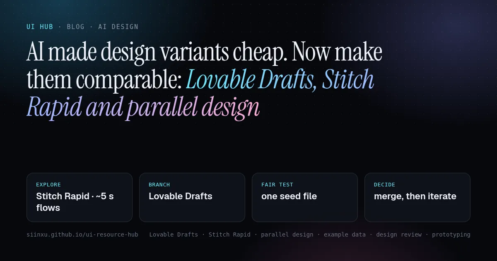
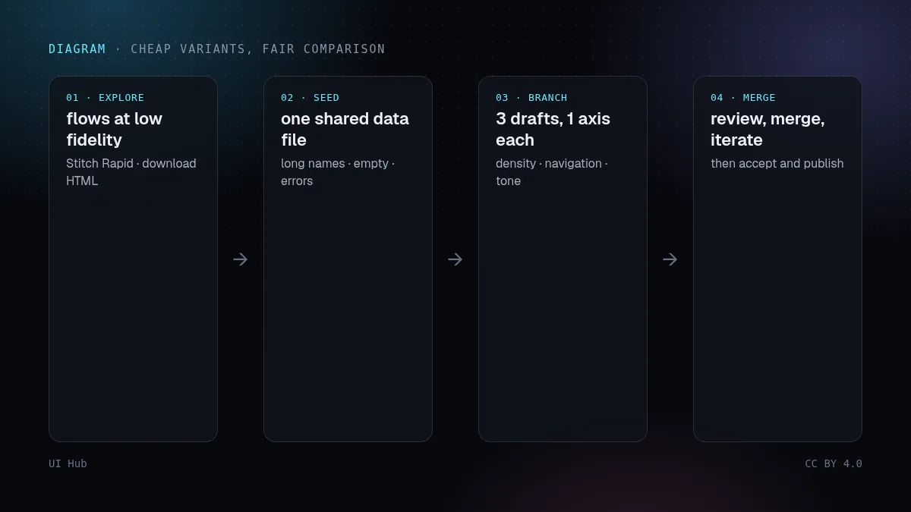
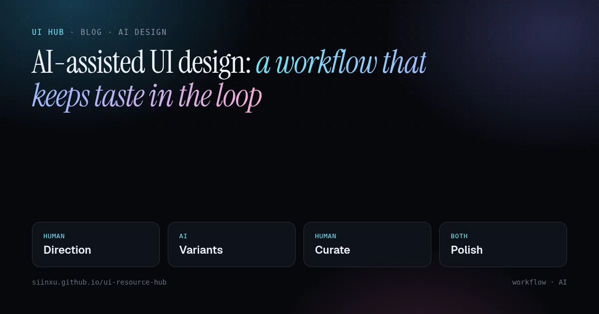
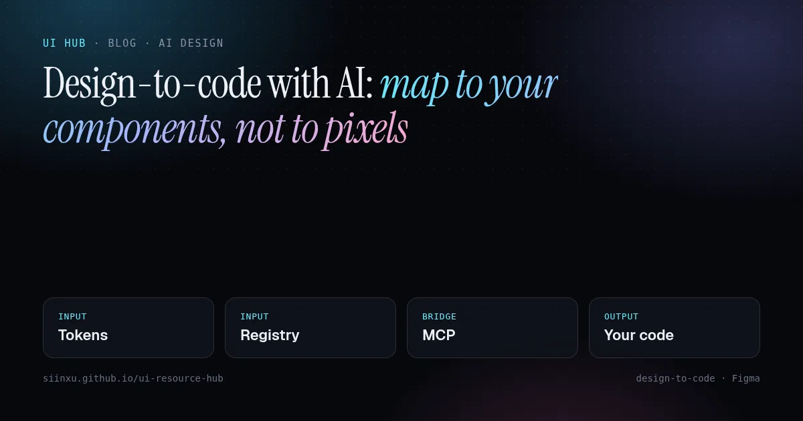

AI made design variants cheap. Now make them comparable: Lovable Drafts, Stitch Rapid and parallel designAIでデザイン案は安くなった。次は比べられるようにする：Lovable Drafts、Stitch Rapid、並行デザインAI 덕분에 디자인 시안은 싸졌다. 이제 비교할 수 있게 만들자: Lovable Drafts, Stitch Rapid, 병렬 디자인AI menjadikan variasi reka bentuk murah. Kini jadikan ia boleh dibandingkan: Lovable Drafts, Stitch Rapid dan reka bentuk selariAI đã làm phương án thiết kế trở nên rẻ. Giờ hãy làm chúng so sánh được: Lovable Drafts, Stitch Rapid và thiết kế song songL’IA a rendu les variantes de design bon marché. Rendez-les comparables : Lovable Drafts, Stitch Rapid et design parallèleLa IA abarató las variantes de diseño. Ahora hazlas comparables: Lovable Drafts, Stitch Rapid y diseño en paraleloKI hat Designvarianten billig gemacht. Jetzt müssen sie vergleichbar werden: Lovable Drafts, Stitch Rapid und paralleles Design
On 16 November 2026 Lovable launched Drafts, full copies of an app with their own chat, preview and, usually, a backend filled with example data. Five days earlier Google began rolling out Stitch Rapid, which turns a rough prompt into a clickable multi-screen flow in about five seconds. One is high fidelity, one is a throwaway scratchpad, and both make parallel design nearly free. What each does, where the risks hide, our take on judging variants fairly, plus a checklist and an agent prompt.2026年11月16日、LovableはDraftsを公開した。アプリ丸ごとのコピーで、それぞれにチャットとプレビュー、多くの場合はサンプルデータ入りのバックエンドが付く。その5日前、GoogleはStitch Rapidの段階提供を始めた。ざっくりした指示から約5秒でクリックできる複数画面のフローを作る。片方は高忠実度、片方は使い捨てのスクラッチパッドで、どちらも並行デザインをほぼ無料にする。中身、リスクの所在、案を公平に比べるための見解、チェックリストとプロンプト付き。2026년 11월 16일 Lovable은 Drafts를 출시했다. 앱 전체의 사본으로, 각자 채팅과 미리보기, 대개는 예시 데이터가 채워진 백엔드를 갖는다. 닷새 전 Google은 대략적인 프롬프트를 약 5초 만에 클릭 가능한 여러 화면 흐름으로 바꾸는 Stitch Rapid를 단계적으로 배포하기 시작했다. 하나는 고충실도, 하나는 쓰고 버리는 스크래치패드이며, 둘 다 병렬 디자인을 거의 공짜로 만든다. 각 도구의 기능, 위험이 숨은 곳, 시안을 공정하게 평가하는 법에 대한 견해, 체크리스트와 프롬프트 포함.Pada 16 November 2026 Lovable melancarkan Drafts, salinan penuh aplikasi dengan sembang, pratonton dan biasanya backend sendiri yang diisi data contoh. Lima hari sebelumnya Google mula melancarkan Stitch Rapid, yang menukar prompt kasar kepada aliran berbilang skrin boleh klik dalam kira-kira lima saat. Satu berfideliti tinggi, satu lagi pad conteng sekali guna, dan kedua-duanya menjadikan reka bentuk selari hampir percuma. Apa yang dibuat setiap satu, di mana risikonya, pandangan kami tentang menilai variasi secara adil, senarai semak dan prompt ejen.Ngày 16/11/2026, Lovable ra mắt Drafts: bản sao đầy đủ của ứng dụng, mỗi bản có chat, bản xem trước riêng và thường có backend riêng chứa dữ liệu mẫu. Năm ngày trước đó, Google bắt đầu triển khai Stitch Rapid, biến một prompt sơ sài thành luồng nhiều màn hình bấm được trong khoảng năm giây. Một bên độ trung thực cao, một bên là bảng nháp dùng xong bỏ, và cả hai khiến thiết kế song song gần như miễn phí. Mỗi công cụ làm gì, rủi ro nằm ở đâu, nhận định về cách đánh giá phương án công bằng, kèm checklist và prompt.Le 16 novembre 2026, Lovable a lancé Drafts : des copies complètes d’une app, chacune avec son chat, son aperçu et, le plus souvent, un backend rempli de données d’exemple. Cinq jours plus tôt, Google commençait à déployer Stitch Rapid, qui transforme un prompt approximatif en parcours cliquable de plusieurs écrans en cinq secondes environ. L’un est haute fidélité, l’autre un brouillon jetable, et tous deux rendent le design parallèle presque gratuit. Ce que fait chacun, où se cachent les risques, notre avis pour juger les variantes équitablement, checklist et prompt.El 16 de noviembre de 2026 Lovable lanzó Drafts: copias completas de una app, cada una con su chat, su vista previa y, normalmente, un backend lleno de datos de ejemplo. Cinco días antes Google empezó a desplegar Stitch Rapid, que convierte un prompt aproximado en un flujo clicable de varias pantallas en unos cinco segundos. Uno es de alta fidelidad y el otro un borrador desechable, y ambos hacen que el diseño en paralelo sea casi gratis. Qué hace cada uno, dónde están los riesgos, nuestra opinión para juzgar variantes con justicia, checklist y prompt.Am 16. November 2026 startete Lovable Drafts: vollständige Kopien einer App mit eigenem Chat, eigener Vorschau und meist einem eigenen Backend voller Beispieldaten. Fünf Tage zuvor begann Google mit dem Rollout von Stitch Rapid, das aus einem groben Prompt in etwa fünf Sekunden einen klickbaren Ablauf über mehrere Screens macht. Das eine ist High-Fidelity, das andere ein Wegwerf-Notizblock, und beide machen paralleles Design fast kostenlos. Was beide tun, wo die Risiken liegen, unsere Sicht auf faires Vergleichen, Checkliste und Agent-Prompt.

本文は英語で表示しています。
본문은 영어로 표시됩니다.
Kandungan dipaparkan dalam bahasa Inggeris.
Nội dung hiển thị bằng tiếng Anh.
Le corps de l’article est en anglais.
El cuerpo del artículo está en inglés.
Der Beitragstext ist auf Englisch.
Two launches a few days apart point the same way. On 16 November Lovable shipped Drafts: from the project name at the top of the editor you hit “New draft” and get a complete copy of your app, from design to database, with its own chat and preview. On 11 November Google started rolling out Stitch Rapid, an experiment in its Stitch design tool that turns a rough prompt or a screenshot into a clickable, medium-fidelity flow of several screens in about five seconds, with new variations about two seconds after a tap.

They sit at opposite ends of fidelity, but they remove the same cost. Exploring three directions used to mean three times the work, so most teams quietly shipped their first idea and polished it. That cost is close to zero now. The new bottleneck is judging the variants, and that is a design-process problem, not a tooling one.
What each tool actually gives you
- Lovable Drafts: a branch of the whole product. Each draft has its own chat, preview and edits, and you can compare drafts side by side or ask Lovable to spin up several versions. On a project that uses the built-in backend, a draft usually gets a backend of its own filled with example data, so a new dashboard shows months of bookings instead of an empty table. A project can hold up to 500 open drafts; an untouched new draft disappears after 24 hours.
- Lovable Drafts: the data can be made consistent. Unless you say otherwise, Lovable writes a few example rows per table when it creates a draft. Ask it to create an example data file and it saves the rows in
db/seed.sql, so every later draft starts from the same customers and bookings. For comparing designs, that file matters more than it sounds. - Lovable Drafts: accept is not fully reversible. Accepting adds the draft’s pages to your unpublished changes, but changes to database structure, storage settings and backend functions take effect in the live app immediately. Restoring an earlier version does not undo schema changes. Some drafts share the live backend (no “example data” banner above the preview), and in every draft secrets and connected services use their live values.
- Stitch Rapid: a scratchpad for flows. Google calls it an early MVP. You pick one of seven design systems (Wireframe, Breeze and Material Design 3 among them, Auto by default), then edit on the canvas: right-click an element to ask for a change, double-click text to rewrite it, hold Space to speak an edit, or open a Tuner with sliders for size and spacing. Screens come pre-linked, and clicking an unlinked button while playing can generate the next screen.
- Stitch Rapid: nothing is kept. The scratchpad is not saved between sessions. “Send to Stitch” moves a flow into regular Stitch for high-fidelity polish, and hands-on reports say the Rapid page reloads when you do, so download keepers as HTML first.

Our take: the variant is cheap, the comparison is the work
Parallel design is old advice. Nielsen Norman Group’s guidance is three to five quick alternatives, then a merge, then iteration. In their 1996 study, picking the best of four parallel versions gave usability 56% above the average original, merging the best ideas gave 70%, and one further iteration on the merge reached 152%. Note what wins: the merge, not the winner. Tools that make ten variants in a minute tempt you to do the opposite, scroll through them, pick the prettiest and move on.
Three things decide whether cheap variants actually improve the result. First, fidelity should match the question. “Which screens does onboarding need, in what order?” is a Stitch Rapid question; answering it in full app copies wastes review time on colours. “Does this dashboard still read when a clinic has 400 bookings a week?” needs real components and realistic data, which is what Drafts provide. Second, variants must differ on purpose. Name the one axis each direction changes (density, navigation model, tone) and keep everything else fixed, or you cannot tell what caused the difference. Third, the data must be the same. A draft with three tidy rows will always beat one shown with a messy, realistic week. A shared seed file with long names, empty states and outliers is a design asset; treat it like your type scale.
The risks are about what is shared, not what is copied. In Lovable the screens are isolated but schema changes go live on accept, and secrets and integrations are live everywhere, so a “test” email from a draft is a real email. In Stitch Rapid the risk is the opposite: nothing persists, so a good direction can vanish with a tab.
A workflow that keeps the benefit
- Write the brief once. Goal, audience, the three to five key screens, and what success looks like. Every variant gets the same brief.
- Explore flows at low fidelity. Use Stitch Rapid or a wireframe system to settle screen count and order. Download every keeper as HTML before sending it on.
- Fix the seed data. Create one example data file with realistic volume, long strings, empty and error cases, and one extreme user. All drafts start from it.
- Branch three directions, one axis each. Name drafts by the axis (“dense table”, “card timeline”, “calm summary”), not “v2”.
- Review side by side against the brief. Same tasks, same data, same viewport, light and dark. Ideally show each person two or three versions and vary the order.
- Merge, then iterate. Take the best parts into one direction, record why the others lost, delete the rest, and only then accept and publish.

Checklist before you accept a draft
- Does the draft have its own backend (example data banner) or share the live one?
- Will accepting change tables, access rules, storage or backend functions? Those go live at once and a restore will not undo them.
- Did anything in the draft call a live integration, such as email, payments or webhooks?
- Were all variants judged on the same seed data and the same tasks?
- Is the losing directions’ best idea carried into the merge, and is the reason written down?
- Were light, dark and a narrow mobile width checked after the merge?
# Paste this into your design or coding agent
Create 3 design directions for from the brief below.
- Each direction changes ONE axis only: .
Name each draft after its axis. Keep copy, data and components identical otherwise.
- Use the shared seed data in : include a long name, an empty state,
an error state and one heavy user. Do not invent extra rows per direction.
- Do not change the database schema, access rules or any live integration.
- For each direction: screenshots at 1280px and 390px, light and dark,
plus 3 sentences on what it optimises for and what it sacrifices.
- Then propose ONE merged direction that keeps the best idea from each,
and list what you dropped and why. Wait for my approval before accepting anything. UI Hub related reading: Lovable and Bolt, prompt to app, prompt-to-UI tools compared and annotate, don’t describe.
Two launches a few days apart point the same way. On 16 November Lovable shipped Drafts: from the project name at the top of the editor you hit “New draft” and get a complete copy of your app, from design to database, with its own chat and preview. On 11 November Google started rolling out Stitch Rapid, an experiment in its Stitch design tool that turns a rough prompt or a screenshot into a clickable, medium-fidelity flow of several screens in about five seconds, with new variations about two seconds after a tap.
They sit at opposite ends of fidelity, but they remove the same cost. Exploring three directions used to mean three times the work, so most teams quietly shipped their first idea and polished it. That cost is close to zero now. The new bottleneck is judging the variants, and that is a design-process problem, not a tooling one.
What each tool actually gives you
- Lovable Drafts: a branch of the whole product. Each draft has its own chat, preview and edits, and you can compare drafts side by side or ask Lovable to spin up several versions. On a project that uses the built-in backend, a draft usually gets a backend of its own filled with example data, so a new dashboard shows months of bookings instead of an empty table. A project can hold up to 500 open drafts; an untouched new draft disappears after 24 hours.
- Lovable Drafts: the data can be made consistent. Unless you say otherwise, Lovable writes a few example rows per table when it creates a draft. Ask it to create an example data file and it saves the rows in
db/seed.sql, so every later draft starts from the same customers and bookings. For comparing designs, that file matters more than it sounds. - Lovable Drafts: accept is not fully reversible. Accepting adds the draft’s pages to your unpublished changes, but changes to database structure, storage settings and backend functions take effect in the live app immediately. Restoring an earlier version does not undo schema changes. Some drafts share the live backend (no “example data” banner above the preview), and in every draft secrets and connected services use their live values.
- Stitch Rapid: a scratchpad for flows. Google calls it an early MVP. You pick one of seven design systems (Wireframe, Breeze and Material Design 3 among them, Auto by default), then edit on the canvas: right-click an element to ask for a change, double-click text to rewrite it, hold Space to speak an edit, or open a Tuner with sliders for size and spacing. Screens come pre-linked, and clicking an unlinked button while playing can generate the next screen.
- Stitch Rapid: nothing is kept. The scratchpad is not saved between sessions. “Send to Stitch” moves a flow into regular Stitch for high-fidelity polish, and hands-on reports say the Rapid page reloads when you do, so download keepers as HTML first.
Our take: the variant is cheap, the comparison is the work
Parallel design is old advice. Nielsen Norman Group’s guidance is three to five quick alternatives, then a merge, then iteration. In their 1996 study, picking the best of four parallel versions gave usability 56% above the average original, merging the best ideas gave 70%, and one further iteration on the merge reached 152%. Note what wins: the merge, not the winner. Tools that make ten variants in a minute tempt you to do the opposite, scroll through them, pick the prettiest and move on.
Three things decide whether cheap variants actually improve the result. First, fidelity should match the question. “Which screens does onboarding need, in what order?” is a Stitch Rapid question; answering it in full app copies wastes review time on colours. “Does this dashboard still read when a clinic has 400 bookings a week?” needs real components and realistic data, which is what Drafts provide. Second, variants must differ on purpose. Name the one axis each direction changes (density, navigation model, tone) and keep everything else fixed, or you cannot tell what caused the difference. Third, the data must be the same. A draft with three tidy rows will always beat one shown with a messy, realistic week. A shared seed file with long names, empty states and outliers is a design asset; treat it like your type scale.
The risks are about what is shared, not what is copied. In Lovable the screens are isolated but schema changes go live on accept, and secrets and integrations are live everywhere, so a “test” email from a draft is a real email. In Stitch Rapid the risk is the opposite: nothing persists, so a good direction can vanish with a tab.
A workflow that keeps the benefit
- Write the brief once. Goal, audience, the three to five key screens, and what success looks like. Every variant gets the same brief.
- Explore flows at low fidelity. Use Stitch Rapid or a wireframe system to settle screen count and order. Download every keeper as HTML before sending it on.
- Fix the seed data. Create one example data file with realistic volume, long strings, empty and error cases, and one extreme user. All drafts start from it.
- Branch three directions, one axis each. Name drafts by the axis (“dense table”, “card timeline”, “calm summary”), not “v2”.
- Review side by side against the brief. Same tasks, same data, same viewport, light and dark. Ideally show each person two or three versions and vary the order.
- Merge, then iterate. Take the best parts into one direction, record why the others lost, delete the rest, and only then accept and publish.
Checklist before you accept a draft
- Does the draft have its own backend (example data banner) or share the live one?
- Will accepting change tables, access rules, storage or backend functions? Those go live at once and a restore will not undo them.
- Did anything in the draft call a live integration, such as email, payments or webhooks?
- Were all variants judged on the same seed data and the same tasks?
- Is the losing directions’ best idea carried into the merge, and is the reason written down?
- Were light, dark and a narrow mobile width checked after the merge?
# Paste this into your design or coding agent
Create 3 design directions for from the brief below.
- Each direction changes ONE axis only: .
Name each draft after its axis. Keep copy, data and components identical otherwise.
- Use the shared seed data in : include a long name, an empty state,
an error state and one heavy user. Do not invent extra rows per direction.
- Do not change the database schema, access rules or any live integration.
- For each direction: screenshots at 1280px and 390px, light and dark,
plus 3 sentences on what it optimises for and what it sacrifices.
- Then propose ONE merged direction that keeps the best idea from each,
and list what you dropped and why. Wait for my approval before accepting anything. UI Hub related reading: Lovable and Bolt, prompt to app, prompt-to-UI tools compared and annotate, don’t describe.
AI promptAIプロンプトAI 프롬프트Prompt AIPrompt cho AIPrompt IAPrompt de IAKI-Prompt
Paste this into Claude, Cursor, v0 or another assistant to apply this post to your own project. Replace the parts in angle brackets.Claude・Cursor・v0 などのAIアシスタントに貼り付けると、この記事の方法をあなたのプロジェクトに適用できます。山括弧の部分は自分の内容に置き換えてください。Claude, Cursor, v0 같은 AI 도우미에 붙여 넣으면 이 글의 방법을 내 프로젝트에 적용할 수 있습니다. 꺾쇠괄호 안은 내 내용으로 바꾸세요.Tampal ke Claude, Cursor, v0 atau pembantu lain untuk menggunakan kaedah artikel ini pada projek anda. Gantikan bahagian dalam kurungan sudut.Dán vào Claude, Cursor, v0 hoặc trợ lý khác để áp dụng bài này cho dự án của bạn. Thay phần trong dấu ngoặc nhọn bằng nội dung của bạn.Collez-le dans Claude, Cursor, v0 ou un autre assistant pour appliquer cet article à votre projet. Remplacez les parties entre chevrons.Pégalo en Claude, Cursor, v0 u otro asistente para aplicar este artículo a tu proyecto. Sustituye lo que está entre corchetes angulares.In Claude, Cursor, v0 oder einen anderen Assistenten einfügen, um diesen Beitrag auf dein Projekt anzuwenden. Teile in spitzen Klammern ersetzen.
You are a senior UI engineer. Apply the article “AI made design variants cheap. Now make them comparable: Lovable Drafts, Stitch Rapid and parallel design” (https://ui.incidental.site/blog/parallel-design-directions-drafts-stitch-rapid/) to my project.
Key idea: On 16 November 2026 Lovable launched Drafts, full copies of an app with their own chat, preview and, usually, a backend filled with example data. Five days earlier Google began rolling out Stitch Rapid, which turns a rough prompt into a clickable multi-screen flow in about five seconds. One is high fidelity, one is a throwaway scratchpad, and both make parallel design nearly free. What each does, where the risks hide, our take on judging variants fairly, plus a checklist and an agent prompt.
Steps:
1. Read the article and turn its advice into a numbered checklist of concrete, checkable rules.
2. Audit <my page / component / repo> against that checklist; mark each rule PASS or FAIL with file and line.
3. Fix the FAIL items in small batches, using my existing tokens and components. Do not invent APIs; follow the official docs the article links to.
4. Finish with a short list of open questions and anything you could not verify.あなたはシニアUIエンジニアです。記事「AIでデザイン案は安くなった。次は比べられるようにする：Lovable Drafts、Stitch Rapid、並行デザイン」（https://ui.incidental.site/blog/parallel-design-directions-drafts-stitch-rapid/）の方法を私のプロジェクトに適用してください。
要点：2026年11月16日、LovableはDraftsを公開した。アプリ丸ごとのコピーで、それぞれにチャットとプレビュー、多くの場合はサンプルデータ入りのバックエンドが付く。その5日前、GoogleはStitch Rapidの段階提供を始めた。ざっくりした指示から約5秒でクリックできる複数画面のフローを作る。片方は高忠実度、片方は使い捨てのスクラッチパッドで、どちらも並行デザインをほぼ無料にする。中身、リスクの所在、案を公平に比べるための見解、チェックリストとプロンプト付き。
手順：
1. 記事を読み、助言を具体的で確認可能な番号付きチェックリストにする。
2. そのチェックリストで <私のページ / コンポーネント / リポジトリ> を監査し、各項目を合格／不合格で示し、ファイルと行番号を書く。
3. 不合格の項目を、既存のトークンとコンポーネントを使って少しずつ修正する。APIを捏造せず、記事がリンクする公式ドキュメントに従う。
4. 最後に未解決の質問と検証できなかった点を挙げる。당신은 시니어 UI 엔지니어입니다. 글 “AI 덕분에 디자인 시안은 싸졌다. 이제 비교할 수 있게 만들자: Lovable Drafts, Stitch Rapid, 병렬 디자인”(https://ui.incidental.site/blog/parallel-design-directions-drafts-stitch-rapid/)의 방법을 내 프로젝트에 적용해 주세요.
핵심: 2026년 11월 16일 Lovable은 Drafts를 출시했다. 앱 전체의 사본으로, 각자 채팅과 미리보기, 대개는 예시 데이터가 채워진 백엔드를 갖는다. 닷새 전 Google은 대략적인 프롬프트를 약 5초 만에 클릭 가능한 여러 화면 흐름으로 바꾸는 Stitch Rapid를 단계적으로 배포하기 시작했다. 하나는 고충실도, 하나는 쓰고 버리는 스크래치패드이며, 둘 다 병렬 디자인을 거의 공짜로 만든다. 각 도구의 기능, 위험이 숨은 곳, 시안을 공정하게 평가하는 법에 대한 견해, 체크리스트와 프롬프트 포함.
단계:
1. 글을 읽고 조언을 구체적이고 확인 가능한 번호 목록으로 정리한다.
2. 그 목록으로 <내 페이지 / 컴포넌트 / 저장소>를 점검하고, 항목마다 통과/실패와 파일·줄 번호를 적는다.
3. 실패 항목을 기존 토큰과 컴포넌트로 조금씩 고친다. API를 지어내지 말고 글에 링크된 공식 문서를 따른다.
4. 마지막으로 남은 질문과 확인하지 못한 내용을 정리한다.Anda jurutera UI kanan. Gunakan kaedah artikel “AI menjadikan variasi reka bentuk murah. Kini jadikan ia boleh dibandingkan: Lovable Drafts, Stitch Rapid dan reka bentuk selari” (https://ui.incidental.site/blog/parallel-design-directions-drafts-stitch-rapid/) pada projek saya.
Idea utama: Pada 16 November 2026 Lovable melancarkan Drafts, salinan penuh aplikasi dengan sembang, pratonton dan biasanya backend sendiri yang diisi data contoh. Lima hari sebelumnya Google mula melancarkan Stitch Rapid, yang menukar prompt kasar kepada aliran berbilang skrin boleh klik dalam kira-kira lima saat. Satu berfideliti tinggi, satu lagi pad conteng sekali guna, dan kedua-duanya menjadikan reka bentuk selari hampir percuma. Apa yang dibuat setiap satu, di mana risikonya, pandangan kami tentang menilai variasi secara adil, senarai semak dan prompt ejen.
Langkah:
1. Baca artikel dan jadikan nasihatnya senarai semak bernombor yang konkrit dan boleh disemak.
2. Audit <halaman / komponen / repo saya> dengan senarai itu; tandakan setiap peraturan LULUS atau GAGAL dengan fail dan baris.
3. Baiki item GAGAL sedikit demi sedikit menggunakan token dan komponen sedia ada. Jangan reka API; ikut dokumen rasmi yang dipautkan artikel.
4. Akhiri dengan soalan terbuka dan perkara yang tidak dapat disahkan.Bạn là kỹ sư UI cấp cao. Hãy áp dụng bài viết “AI đã làm phương án thiết kế trở nên rẻ. Giờ hãy làm chúng so sánh được: Lovable Drafts, Stitch Rapid và thiết kế song song” (https://ui.incidental.site/blog/parallel-design-directions-drafts-stitch-rapid/) cho dự án của tôi.
Ý chính: Ngày 16/11/2026, Lovable ra mắt Drafts: bản sao đầy đủ của ứng dụng, mỗi bản có chat, bản xem trước riêng và thường có backend riêng chứa dữ liệu mẫu. Năm ngày trước đó, Google bắt đầu triển khai Stitch Rapid, biến một prompt sơ sài thành luồng nhiều màn hình bấm được trong khoảng năm giây. Một bên độ trung thực cao, một bên là bảng nháp dùng xong bỏ, và cả hai khiến thiết kế song song gần như miễn phí. Mỗi công cụ làm gì, rủi ro nằm ở đâu, nhận định về cách đánh giá phương án công bằng, kèm checklist và prompt.
Các bước:
1. Đọc bài và biến lời khuyên thành danh sách kiểm tra đánh số, cụ thể, kiểm chứng được.
2. Rà soát <trang / component / repo của tôi> theo danh sách đó; ghi ĐẠT hoặc KHÔNG ĐẠT kèm tệp và dòng.
3. Sửa các mục KHÔNG ĐẠT theo từng đợt nhỏ, dùng token và component sẵn có. Không bịa API; làm theo tài liệu chính thức mà bài viết dẫn tới.
4. Kết thúc bằng các câu hỏi còn mở và những điểm chưa xác minh được.Tu es ingénieur UI senior. Applique l’article « L’IA a rendu les variantes de design bon marché. Rendez-les comparables : Lovable Drafts, Stitch Rapid et design parallèle » (https://ui.incidental.site/blog/parallel-design-directions-drafts-stitch-rapid/) à mon projet.
Idée clé : Le 16 novembre 2026, Lovable a lancé Drafts : des copies complètes d’une app, chacune avec son chat, son aperçu et, le plus souvent, un backend rempli de données d’exemple. Cinq jours plus tôt, Google commençait à déployer Stitch Rapid, qui transforme un prompt approximatif en parcours cliquable de plusieurs écrans en cinq secondes environ. L’un est haute fidélité, l’autre un brouillon jetable, et tous deux rendent le design parallèle presque gratuit. Ce que fait chacun, où se cachent les risques, notre avis pour juger les variantes équitablement, checklist et prompt.
Étapes :
1. Lis l’article et transforme ses conseils en une liste numérotée de règles concrètes et vérifiables.
2. Audite <ma page / mon composant / mon dépôt> avec cette liste ; indique OK ou KO pour chaque règle, avec fichier et ligne.
3. Corrige les points KO par petits lots, avec mes tokens et composants existants. N’invente pas d’API ; suis la documentation officielle citée par l’article.
4. Termine par les questions ouvertes et ce que tu n’as pas pu vérifier.Eres un ingeniero de UI sénior. Aplica el artículo “La IA abarató las variantes de diseño. Ahora hazlas comparables: Lovable Drafts, Stitch Rapid y diseño en paralelo” (https://ui.incidental.site/blog/parallel-design-directions-drafts-stitch-rapid/) a mi proyecto.
Idea clave: El 16 de noviembre de 2026 Lovable lanzó Drafts: copias completas de una app, cada una con su chat, su vista previa y, normalmente, un backend lleno de datos de ejemplo. Cinco días antes Google empezó a desplegar Stitch Rapid, que convierte un prompt aproximado en un flujo clicable de varias pantallas en unos cinco segundos. Uno es de alta fidelidad y el otro un borrador desechable, y ambos hacen que el diseño en paralelo sea casi gratis. Qué hace cada uno, dónde están los riesgos, nuestra opinión para juzgar variantes con justicia, checklist y prompt.
Pasos:
1. Lee el artículo y convierte sus consejos en una lista numerada de reglas concretas y comprobables.
2. Audita <mi página / componente / repositorio> con esa lista; marca cada regla como CUMPLE o NO CUMPLE con archivo y línea.
3. Corrige los puntos que no cumplen en lotes pequeños, usando mis tokens y componentes actuales. No inventes APIs; sigue la documentación oficial que enlaza el artículo.
4. Termina con las preguntas abiertas y lo que no pudiste verificar.Du bist Senior-UI-Engineer. Wende den Artikel „KI hat Designvarianten billig gemacht. Jetzt müssen sie vergleichbar werden: Lovable Drafts, Stitch Rapid und paralleles Design“ (https://ui.incidental.site/blog/parallel-design-directions-drafts-stitch-rapid/) auf mein Projekt an.
Kernidee: Am 16. November 2026 startete Lovable Drafts: vollständige Kopien einer App mit eigenem Chat, eigener Vorschau und meist einem eigenen Backend voller Beispieldaten. Fünf Tage zuvor begann Google mit dem Rollout von Stitch Rapid, das aus einem groben Prompt in etwa fünf Sekunden einen klickbaren Ablauf über mehrere Screens macht. Das eine ist High-Fidelity, das andere ein Wegwerf-Notizblock, und beide machen paralleles Design fast kostenlos. Was beide tun, wo die Risiken liegen, unsere Sicht auf faires Vergleichen, Checkliste und Agent-Prompt.
Schritte:
1. Lies den Artikel und mach aus den Empfehlungen eine nummerierte Liste konkreter, prüfbarer Regeln.
2. Prüfe <meine Seite / Komponente / mein Repo> anhand dieser Liste; markiere jede Regel mit OK oder FEHLT, mit Datei und Zeile.
3. Behebe die fehlenden Punkte in kleinen Schritten mit meinen vorhandenen Tokens und Komponenten. Erfinde keine APIs; folge der offiziellen Doku, die der Artikel verlinkt.
4. Schließe mit offenen Fragen und dem, was du nicht prüfen konntest.References参考文献참고 자료RujukanNguồn tham khảoRéférencesReferenciasQuellen
- Now you can explore any idea in parallel without touching what’s live — Lovable blog
- Explore changes with drafts — Lovable Docs
- Revert and restore your project with version history — Lovable Docs
- Collaboration — Lovable Docs
- Google releases experimental “Stitch Rapid”: multi-screen prototypes in about five seconds (in Japanese) — gihyo.jp
- What is Google “Stitch Rapid”? Where the five-second multi-screen prototype experiment fits, and its caveats (in Japanese) — chot Inc.
- Stitch by Google (official account, Stitch Rapid thread, 11 Nov 2026) — X · @stitchbygoogle
- Introducing “vibe design” with Stitch — Google blog
- 3 Design Processes for High Usability: Iterative Design, Parallel Design, and Competitive Testing — Therese Fessenden · Nielsen Norman Group
Related posts関連記事관련 글Artikel berkaitanBài liên quanArticles liésArtículos relacionadosÄhnliche Beiträge

AI-assisted UI design: a workflow that keeps taste in the loopAI支援UIデザイン：センスを手放さないワークフローAI 보조 UI 디자인: 취향을 잃지 않는 워크플로Reka bentuk UI berbantu AI: aliran kerja yang mengekalkan cita rasaThiết kế UI có AI hỗ trợ: quy trình giữ được gu thẩm mỹDesign d'UI assisté par l'IA : un flux qui garde le goût dans la boucleDiseño de UI asistido por IA: un flujo que mantiene el criterioKI-gestütztes UI-Design: ein Workflow, der Geschmack im Spiel hält
Generators are fast but average. Split the job: humans set direction and constraints, AI explores variants, humans curate and polish.生成ツールは速いが平均的。方向と制約は人、バリエーションはAI、選別と仕上げは人。생성기는 빠르지만 평범하다. 방향과 제약은 사람, 변형은 AI, 선별과 다듬기는 사람.Penjana pantas tetapi biasa. Manusia tetapkan hala, AI teroka variasi, manusia pilih dan gilap.Công cụ sinh nhanh nhưng tầm thường. Người định hướng, AI khám phá biến thể, người chọn lọc và hoàn thiện.Rapides mais moyens : l'humain fixe la direction, l'IA explore, l'humain sélectionne et peaufine.Rápidos pero promedio: el humano fija la dirección, la IA explora, el humano elige y pule.Schnell, aber durchschnittlich: Mensch gibt Richtung vor, KI exploriert, Mensch kuratiert und poliert.

Prompting for UI: write specs, not wishesUIのためのプロンプト：願望ではなく仕様を書くUI 프롬프트: 소원 말고 명세를 써라Prompt untuk UI: tulis spesifikasi, bukan hasratViết prompt cho UI: viết đặc tả, đừng viết mong muốnPrompts pour l'UI : écrire des specs, pas des souhaitsPrompts para UI: escribe especificaciones, no deseosPrompts für UI: Spezifikationen statt Wünsche
"Modern and clean" means nothing to a model. Name layout, tokens, states, content and what to avoid.「モダンでクリーン」はモデルに何も伝えない。レイアウト、トークン、状態、内容、禁止事項を書く。"모던하고 깔끔하게"는 의미가 없다. 레이아웃, 토큰, 상태, 콘텐츠, 금지 사항을 적어라."Moden dan bersih" tiada makna. Nyatakan susun atur, token, keadaan, kandungan dan larangan."Hiện đại, gọn gàng" chẳng nói gì. Hãy nêu bố cục, token, trạng thái, nội dung và điều cấm.« Moderne et épuré » ne dit rien. Précisez mise en page, tokens, états, contenu et interdits."Moderno y limpio" no dice nada. Indica layout, tokens, estados, contenido y prohibiciones.„Modern und clean“ sagt nichts. Nenne Layout, Tokens, Zustände, Inhalt und Verbote.

Design-to-code with AI: map to your components, not to pixelsAIでデザインからコードへ：ピクセルではなくコンポーネントに対応付けるAI로 디자인→코드: 픽셀이 아니라 컴포넌트에 매핑하라Reka bentuk ke kod dengan AI: petakan ke komponen, bukan pikselTừ thiết kế sang code bằng AI: ánh xạ vào component, không phải pixelDu design au code avec l'IA : mapper vers vos composants, pas des pixelsDe diseño a código con IA: mapea a tus componentes, no a píxelesDesign-to-Code mit KI: auf Komponenten mappen, nicht auf Pixel
Pixel-perfect export creates throwaway code. Give the agent your component registry and tokens via MCP so output reuses what you already ship.ピクセル完全な書き出しは使い捨てコードになる。MCPでレジストリとトークンを渡そう。픽셀 퍼펙트 내보내기는 일회용 코드다. MCP로 레지스트리와 토큰을 넘겨라.Eksport piksel sempurna menghasilkan kod pakai buang. Beri registri komponen dan token melalui MCP.Xuất pixel-perfect tạo code dùng một lần. Đưa registry và token qua MCP.L'export au pixel produit du code jetable. Donnez registre et tokens via MCP.Exportar al píxel crea código desechable. Pasa registro y tokens vía MCP.Pixelgenauer Export erzeugt Wegwerfcode. Registry und Tokens per MCP übergeben.